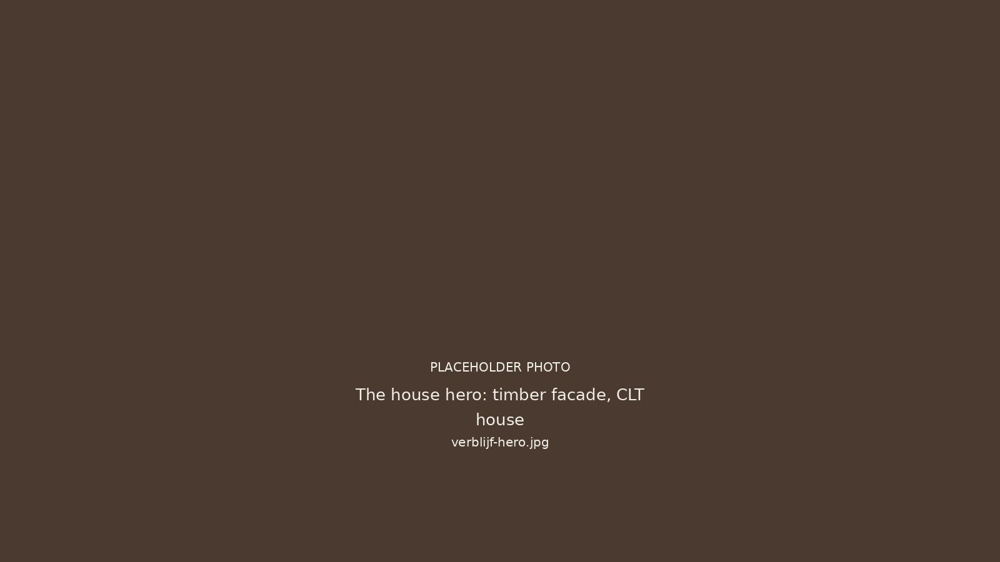
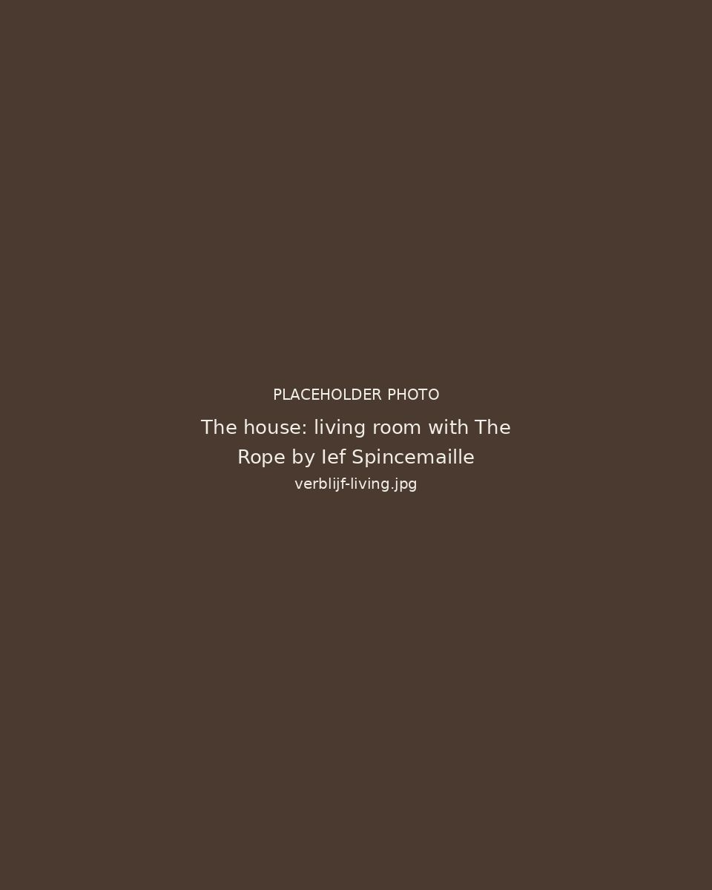
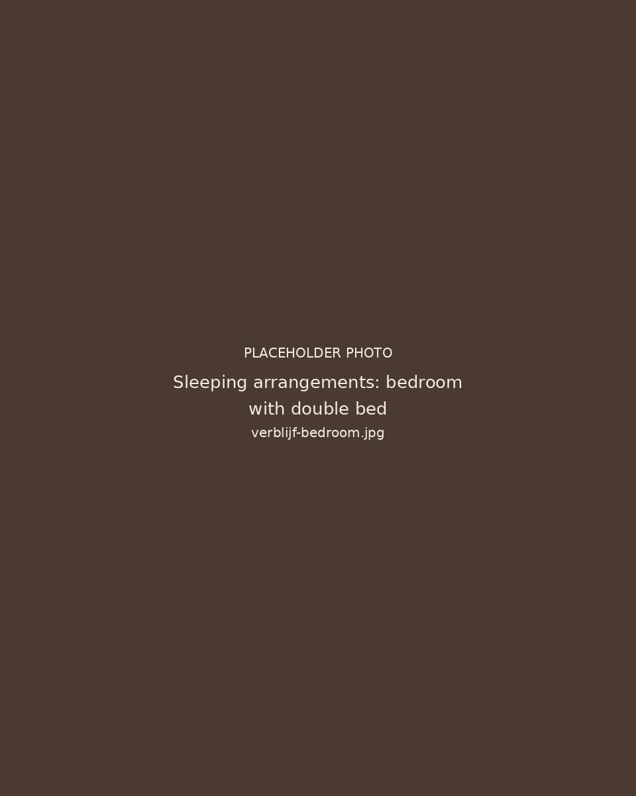
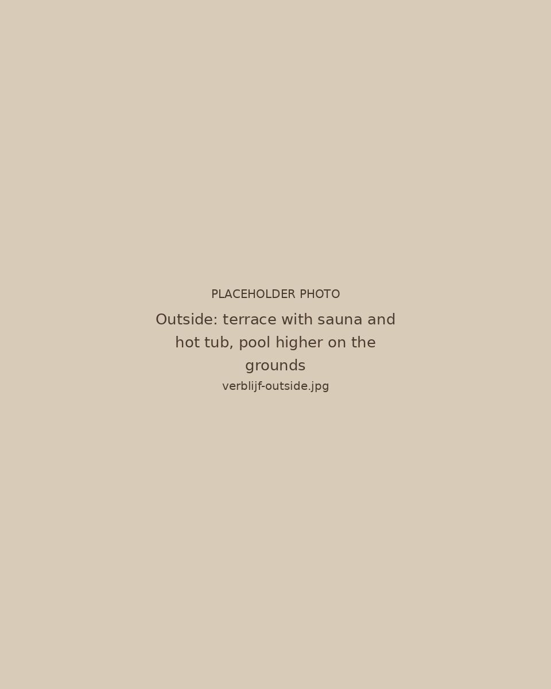

Het verblijfThe houseLa maisonDas Haus
No.4 Lange Ast is een vakantiehuis voor 8 personen, gelegen in het dorp Huise, tussen Gent en de Vlaamse Ardennen.
Dit is geen afgelegen verblijf in de natuur, maar een huis midden in een dorp.
Je verblijft hier tussen het dagelijkse leven: het kerkplein, wandelaars, fietsers en het ritme van het dorp. Het huis zelf is een modern, compact verblijf met drie slaapkamers, een volledig uitgeruste keuken en een gezellige leefruimte.
Buiten vind je een sauna en hottub om 's avonds te ontspannen.
No.4 Lange Ast is a holiday house for eight, in the village of Huise, between Ghent and the Flemish Ardennes.
This is not a remote stay in the countryside, but a house in the middle of a village.
You stay among everyday life: the church square, walkers, cyclists and the rhythm of the village. The house itself is a modern, compact stay with three bedrooms, a fully equipped kitchen and a comfortable living room.
Outside you will find a sauna and hot tub to unwind in the evening.
No.4 Lange Ast est une maison de vacances pour huit personnes, située dans le village de Huise, entre Gand et les Ardennes flamandes.
Ce n'est pas un séjour isolé en pleine nature, mais une maison au milieu d'un village.
Vous séjournez ici au cœur de la vie quotidienne : la place de l'église, les promeneurs, les cyclistes et le rythme du village. La maison elle-même est un logement moderne et compact avec trois chambres, une cuisine entièrement équipée et un séjour chaleureux.
À l'extérieur, un sauna et un bain nordique pour se détendre le soir.
No.4 Lange Ast ist ein Ferienhaus für acht Personen im Dorf Huise, zwischen Gent und den Flämischen Ardennen.
Es ist keine abgelegene Unterkunft in der Natur, sondern ein Haus mitten in einem Dorf.
Sie wohnen hier inmitten des Alltags: der Kirchplatz, Spaziergänger, Radfahrer und der Rhythmus des Dorfes. Das Haus selbst ist eine moderne, kompakte Unterkunft mit drei Schlafzimmern, einer voll ausgestatteten Küche und einem gemütlichen Wohnraum.
Draußen gibt es eine Sauna und einen Hot Tub, um abends zu entspannen.

Het huisThe houseLa maisonDas Haus
- Gebouwd in 2025 in CLT-hout
- Leefruimte met haard en vloerverwarming
- Drie slaapkamers, elk met eigen douche
- Volledig uitgeruste keuken met oven, vaatwasser en grote koelkast, plus wasmachine en droogkast
- In de living het kunstwerk The Rope van Ief Spincemaille
- Built in 2025 in CLT timber
- Living room with a wood stove and underfloor heating
- Three bedrooms, each with its own shower
- Fully equipped kitchen with an oven, dishwasher and a large fridge, plus a washing machine and dryer
- In the living room, the artwork The Rope by Ief Spincemaille
- Construite en 2025 en bois CLT
- Séjour avec poêle à bois et chauffage par le sol
- Trois chambres, chacune avec sa propre douche
- Cuisine entièrement équipée avec four, lave-vaisselle et grand réfrigérateur, ainsi qu'un lave-linge et un sèche-linge
- Dans le séjour, l'œuvre The Rope d'Ief Spincemaille
- 2025 aus CLT-Holz gebaut
- Wohnraum mit Holzofen und Fußbodenheizung
- Drei Schlafzimmer, jedes mit eigener Dusche
- Voll ausgestattete Küche mit Backofen, Geschirrspüler und großem Kühlschrank, dazu Waschmaschine und Trockner
- Im Wohnraum das Kunstwerk The Rope von Ief Spincemaille

SlaapindelingSleeping arrangementsCouchagesSchlafmöglichkeiten
- Slaapkamer 1: een tweepersoonsbed en een babybedje
- Slaapkamer 2: twee eenpersoonsbedden en twee stapelbedden
- Slaapkamer 3: een tweepersoonsbed
- Tot 8 gasten
- Bedroom 1: one double bed and one crib
- Bedroom 2: two single beds and two bunk beds
- Bedroom 3: one double bed
- Up to 8 guests
- Chambre 1 : un lit double et un lit bébé
- Chambre 2 : deux lits simples et deux lits superposés
- Chambre 3 : un lit double
- Jusqu'à 8 personnes
- Schlafzimmer 1: ein Doppelbett und ein Babybett
- Schlafzimmer 2: zwei Einzelbetten und zwei Etagenbetten
- Schlafzimmer 3: ein Doppelbett
- Bis zu 8 Gäste

BuitenOutsideExtérieurDraußen
- Sauna op hout
- Houtgestookte hottub
- Gedeeld verwarmd zwembad, open van 10 tot 22 uur, 29 graden van midden mei tot eind september
- Terras en een fietsenberging met Karcher en laadpunt voor elektrische fietsen
- Wood-burning sauna
- Wood-fired hot tub
- Shared heated pool, open from 10 am to 10 pm, 29 degrees from mid May to the end of September
- Terrace and a bike store with a Karcher and a charging point for e-bikes
- Sauna au bois
- Bain nordique chauffé au bois
- Piscine chauffée partagée, ouverte de 10 à 22 heures, 29 degrés de mi-mai à fin septembre
- Terrasse et local à vélos avec Karcher et point de recharge pour vélos électriques
- Holzsauna
- Holzbefeuerter Hot Tub
- Gemeinsam genutzter beheizter Pool, geöffnet von 10 bis 22 Uhr, 29 Grad von Mitte Mai bis Ende September
- Terrasse und Fahrradraum mit Karcher und Ladepunkt für E-Bikes
Goed om te wetenGood to knowBon à savoirGut zu wissen
- Je wordt persoonlijk verwelkomd door de gastheer, die naast het huis woont
- De woning is bedoeld voor gasten vanaf 23 jaar en minder geschikt voor jonge kinderen
- Niet roken binnen, huisdieren zijn niet toegestaan
- Stilte tussen 22 en 7 uur, uit respect voor de buren
- Buiten hangen enkele camera's, met zicht op de voordeuren, de oprit en het zwembadgedeelte
- You are welcomed in person by the host, who lives next to the house
- The house is intended for guests aged 23 and over and is less suitable for young children
- No smoking inside, pets are not allowed
- Quiet between 10 pm and 7 am, out of respect for the neighbours
- There are a few cameras outside, covering the front doors, the driveway and the pool area
- Vous êtes accueilli personnellement par l'hôte, qui habite à côté de la maison
- La maison est destinée aux personnes de 23 ans et plus et convient moins aux jeunes enfants
- Interdit de fumer à l'intérieur, les animaux ne sont pas admis
- Calme entre 22 et 7 heures, par respect pour les voisins
- Quelques caméras extérieures filment les portes d'entrée, l'allée et l'espace piscine
- Sie werden persönlich vom Gastgeber empfangen, der neben dem Haus wohnt
- Das Haus ist für Gäste ab 23 Jahren gedacht und für kleine Kinder weniger geeignet
- Rauchen im Haus ist nicht erlaubt, Haustiere sind nicht gestattet
- Ruhe zwischen 22 und 7 Uhr, aus Rücksicht auf die Nachbarn
- Draußen gibt es einige Kameras, mit Blick auf die Haustüren, die Einfahrt und den Poolbereich